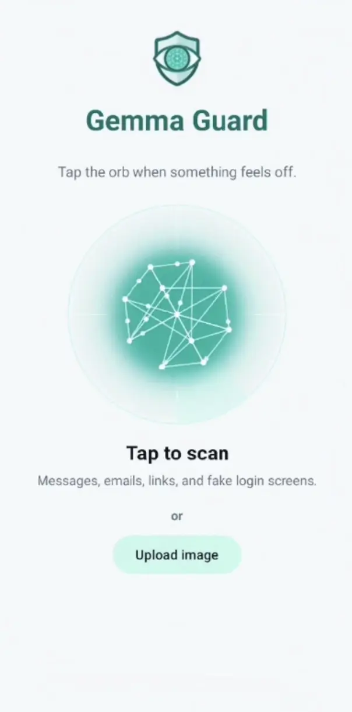
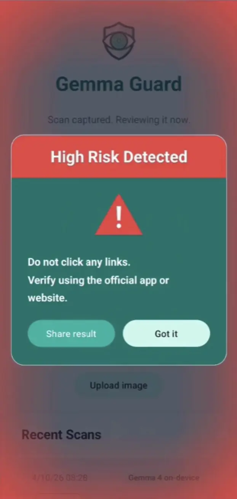
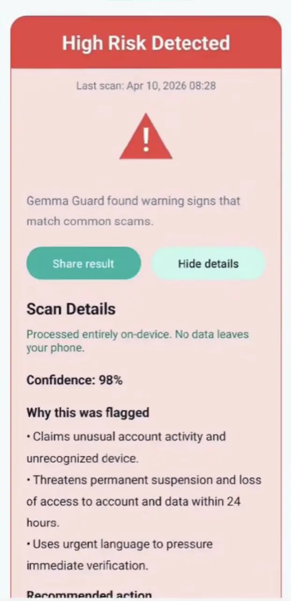
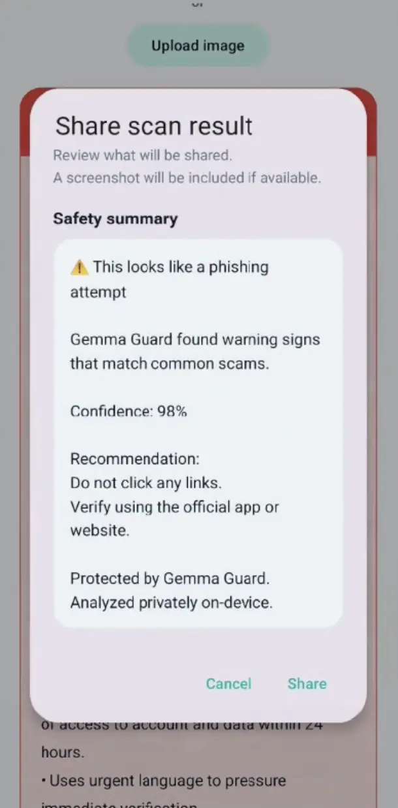

Multimodal fit
The app needs a model that can reason over both the screenshot and the extracted text, not just one or the other.
It captures the current screen, extracts visible text, and uses Gemma 4 locally to judge suspicious messages, login pages, and payment prompts. The result is a clear verdict, confidence score, reasons, and next-step guidance designed for everyday users and families.
Built for people who want a fast second opinion before tapping something risky.
Nadia is a 70-year-old mom. She uses her phone every day, pays bills, chats with family, and knows her way around apps. She still got caught by a phishing message that looked believable enough in the moment.
Gemma Guard was built for people like her: capable, busy, and deserving of a second opinion before a risky tap becomes a real loss.
The app is designed to answer one question quickly: is this screen safe to trust right now?
Grab the current Android screen exactly as the user sees it.
OCR pulls out the visible wording, links, brands, and urgency cues.
Gemma 4 evaluates the screenshot and OCR text together on the device.
Show verdict, confidence, reasons, and the safest next action to take.
Gemma Guard uses Gemma because phishing screens are visual, contextual, and often written to pressure people into fast decisions.
The app needs a model that can reason over both the screenshot and the extracted text, not just one or the other.
Gemma 4 is a strong fit for local-first Android experiences where privacy, latency, and offline behavior matter.
The goal is not only classification. It is to turn model output into understandable reasons and a clear recommendation.
Gemma Guard is not a generic warning banner. It gives context, explains risk, and keeps the core workflow local.
Screenshot analysis, OCR review, and reasoning happen locally with Gemma 4.
Private messages and sensitive screens stay where they belong.
Gemma Guard sees both the visual design and the written content.
Users get more than a warning. They get context they can understand.
Short guidance, clear language, and simple next-step recommendations.
Bring family into the loop when an extra opinion matters most.
Urgent money requests, payment confirmations, and bank warnings.
Pages that push users to log in quickly before they stop to verify.
Everyday messages that look harmless enough to tap without thinking.
Results can be shared with a trusted contact when a second opinion helps.
These screens show the product as a real Android workflow, not a concept mockup.




The app starts from the live screen instead of asking users to copy content manually.
Gemma gets both the visual layout and the extracted text for better context.
The result is translated into verdict, confidence, reasons, and recommended action.
The core phishing check is designed to stay on-device for privacy and trust.
The hard part is not only detection. It is turning the answer into language people can act on.
Gemma Guard was built for the Google Gemma 4 Good Hackathon as a privacy-first Android app that shows how Gemma can be used in a real mobile safety workflow: capture a risky screen, reason locally, explain the result, and help the user act safely.
Gemma Guard was built by Milana Kerbel and Pavel Kerbel for the Google Gemma 4 Good Hackathon. The mom at the top of this page is not a composite persona — she is Milana’s mother. She was scammed by a phishing message last year, and this is the app she should have had on her phone that day.
Contact: hello@gemmaguard.org
It captures the current Android screen, extracts visible text with OCR, and uses Gemma 4 locally to determine whether the content looks like phishing.
Phishing is often about context and visual deception. Gemma helps the app reason over the layout, wording, and overall screen together.
The core experience is designed to run on-device, so private messages and sensitive screens do not need to leave the phone for analysis.
Everyday Android users, including older adults and families, who want a quick second opinion before tapping a suspicious screen.
The fastest way to evaluate Gemma Guard is to watch the product flow, then look at the Android implementation behind it.